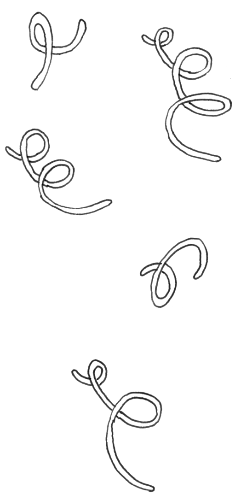
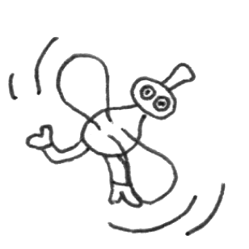
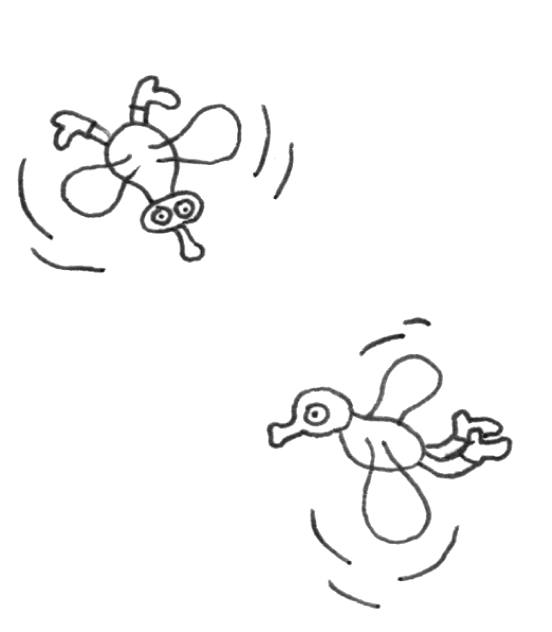

Dear reader,
It’s Real here. Did you know that The Creative Independent is 5 years old? That means we’ve made 5 trips around the sun.
We thought this would be a good time to look back on the journey so far. So far we’ve talked with over 1185 creative people, and that number will be higher tomorrow.
When TCI first launched we published a brief origin story of our logo and why it’s a spiral. The spiral is a metaphor for circling back, again and again, a process that artists tend to do frequently. When we launched, something we had in mind, too, was attempting to slow things down on the internet, offering a place that felt quieter and more intentional. One way to do this was through what we published; another way was our minimal design. We chose a snail as a mascot to represent this kind of movement, but also because like a snail trail, artists often leave some sort of residue in their wake. Making art is often a messy process and TCI exists to celebrate and nurture people along this journey.
 We’ve published interviews, guides, wisdoms, zines, reports, and artwork, and have slowly grown into a vast resource that anyone can use for free. To celebrate the last 5 years we’ve compiled a few highlights into a Greatest Hits collection of TCI’s life so far. When we say “greatest hits,” we don’t mean the most popular. It’s more the pieces that we felt were (and are) the most useful or maybe point to a necessary tip or idea. The truth is, if we were to make this collection on another day, it might be different, because like the creative process, our minds are not static. Either way, we hope you’ll enjoy this compilation. We look forward to many more birthdays to come.
Some things from our past 5 years…
Full Color Sketch by Qiong Li
Life’s A Beach And Then You Dive by Jaakko Pallasvuo
Mindset by Hope Hall
My website is a shifting house next to a river of knowledge. What could yours be?
How to make a zine
How to balance full-time work with creative projects
I am not the next big thing: on creativity and aging
How to begin designing for diversity
On feeling healthy
The Creative Independent
How to write a poem
A Soft Manifesto
Sober 21
The Creative Independent
 In the spirit of circling back we created this time capsule that displays artifacts from TCI’s not-so-distant past…

We thought this might be a good moment to bring you some of our readers’ voices. After all, they (you) make TCI worth celebrating! Here are a few birthday messages that we received on TCI’s voicemail. No need to dial our voicemail; you can play them below.
Jacksonville, FL
0:21
New York, NY
0:02
Bay Area, CA
1:05
Denver, CO
1:50
New Hampshire
0:30
Glasgow
0:23
Minneapolis, MN
0:24
West Virginia
2:59
West Virginia
1:30
We’d also like to share our birthday gifts with you. Our friends and collaborators made us these playlists, and we hope you’ll give them a listen.
...and if you are feeling extra ambitious here are a few ways you could celebrate TCI’s birthday IRL:
Go to the park
Read a poem
Visit a museum near you
Look for a snail
Admire the clouds
five years!
P.S. If you’re new to this site, The Creative Independent (TCI) is a growing resource of emotional and practical guidance for creative people, published ad-free by Kickstarter, a public-benefit corporation.
You can subscribe to our newsletter, follow us on Instagram, or learn more about us.
Feeling everything at once,
Real Snail